Warehouse Inventory System
User manual — everything you need to get stock tracked.
Overview
This is a barcode-driven inventory web app for a small family team. It records every movement of stock, tracks exactly which shelf or bin something is in, and is designed to be fast to use with a barcode scanner.
There are two roles:
- Owner — shared account used for administration (warehouses, products, users). Cannot perform inventory movements.
- Family User — personal PIN account used for day-to-day stock operations.
Quick links
Signing In
Everyone who opens the app is redirected to the login page if they are not already signed in.
Family users — PIN login
Select your name from the dropdown, enter your 4-digit PIN, and press Login.
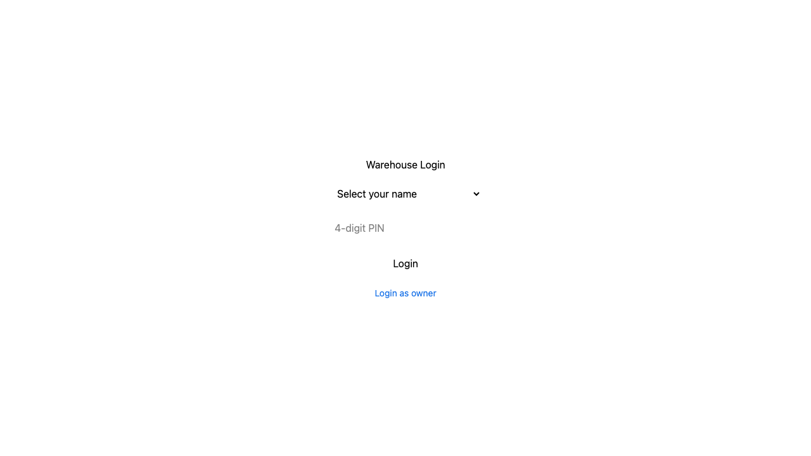
Fig 1 — The login page. Select a name, enter your PIN and press Login.
Owner login
Click Login as owner at the bottom, enter the shared owner password, and press Login.
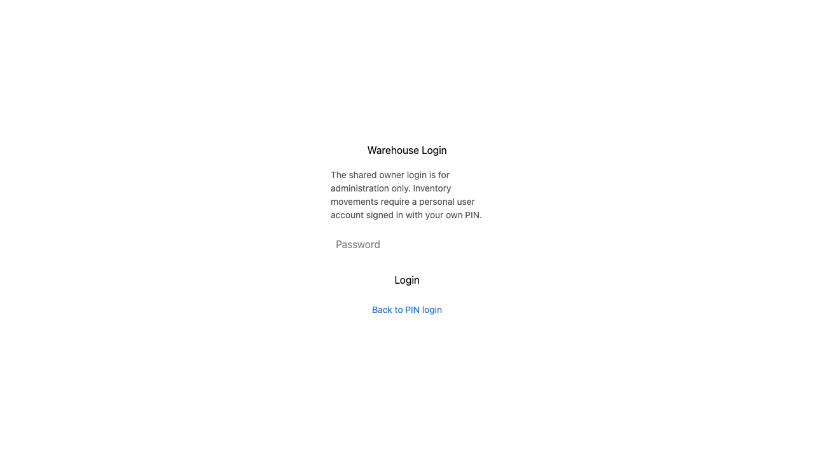
Fig 2 — The owner password panel, revealed by clicking "Login as owner".
Signing out
Click your name button in the top-right corner, then click Logout. You will be prompted to confirm. Once signed out you are returned to the login page.
Warehouses & Bins Owner
Go to Configuration in the side menu. Here you create warehouses and, if needed, add the bins (shelves, rows, pallets) inside each warehouse.
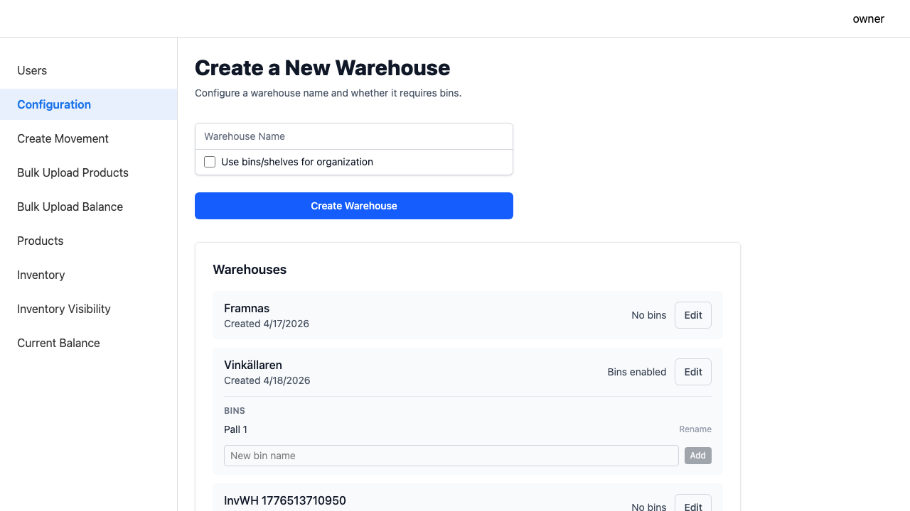
Fig 3 — The Configuration page showing existing warehouses, bins, and the form to create a new one.
Creating a warehouse
- Enter a warehouse name.
- Check Use bins/shelves for organization if stock must be tracked per bin. This cannot be changed later without migrating data.
- Click Create Warehouse.
Adding bins to a warehouse
Bins can only be added to warehouses with bins enabled. Type a bin name (e.g. Shelf A, Row 3, Pall 1) and click Add. Bins can be renamed but not deleted once stock is assigned.
Products & Barcodes Owner
Go to Products in the side menu. This is where you define every item the team tracks.
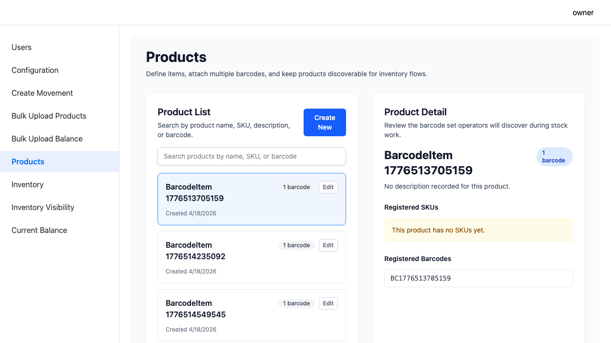
Fig 4 — The Products page with the item list and barcode management.
Creating a product
- Click Add Product.
- Enter a name (required) and an optional description.
- Submit to save.
Adding barcodes
Each product can have one or more barcodes. Expand a product row and enter a barcode in the barcode field. A single barcode can only belong to one product.
Bulk Upload Products Owner
Use this page to import hundreds of products at once from a CSV file instead of entering them one by one.
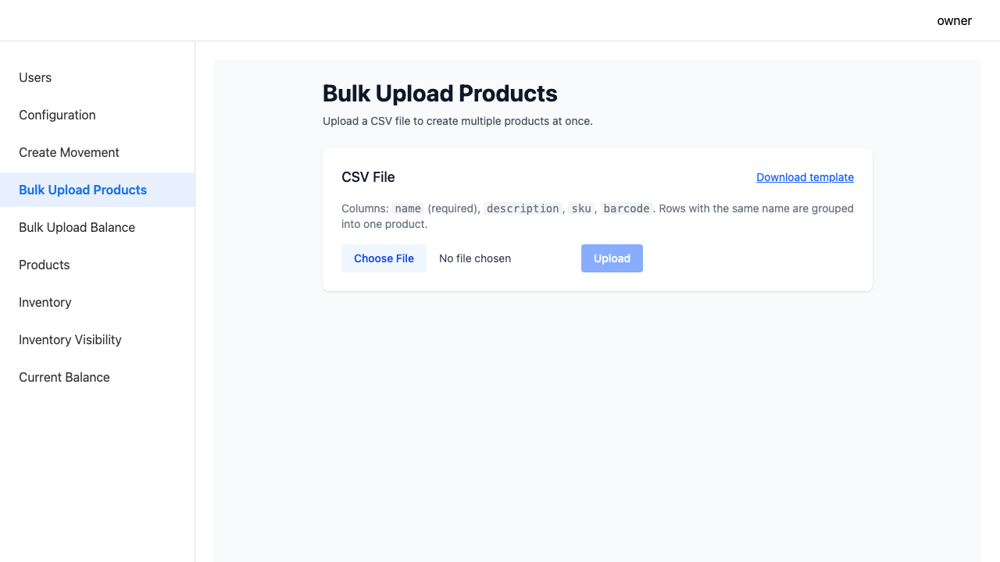
Fig 5 — The Bulk Upload Products page. Download the template, fill it in, and upload.
- Click Download template to get the correct CSV format.
- Fill in the CSV file with your product names, descriptions, and barcodes.
- Upload the filled CSV. The system imports valid rows and shows a summary of how many were imported and any that were skipped with reasons.
Bulk Upload Balance Owner
Use this to import opening stock levels when first setting up the system or after a full physical count.
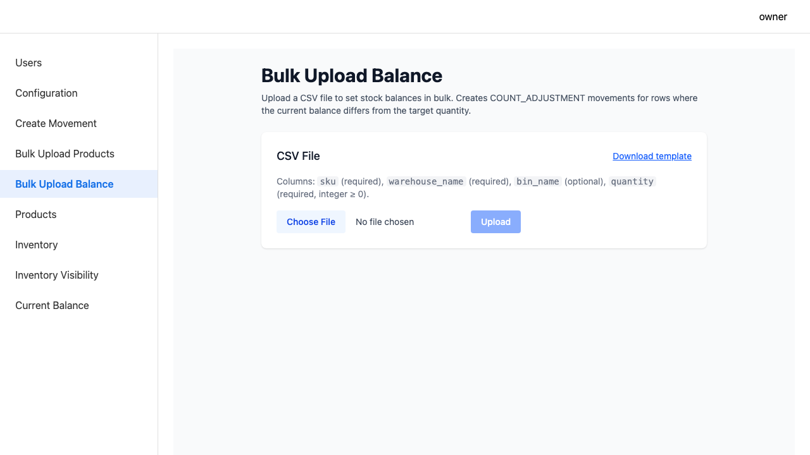
Fig 6 — The Bulk Upload Balance page for importing opening stock quantities.
Team Members Owner
Go to Users in the side menu to manage who can sign in.
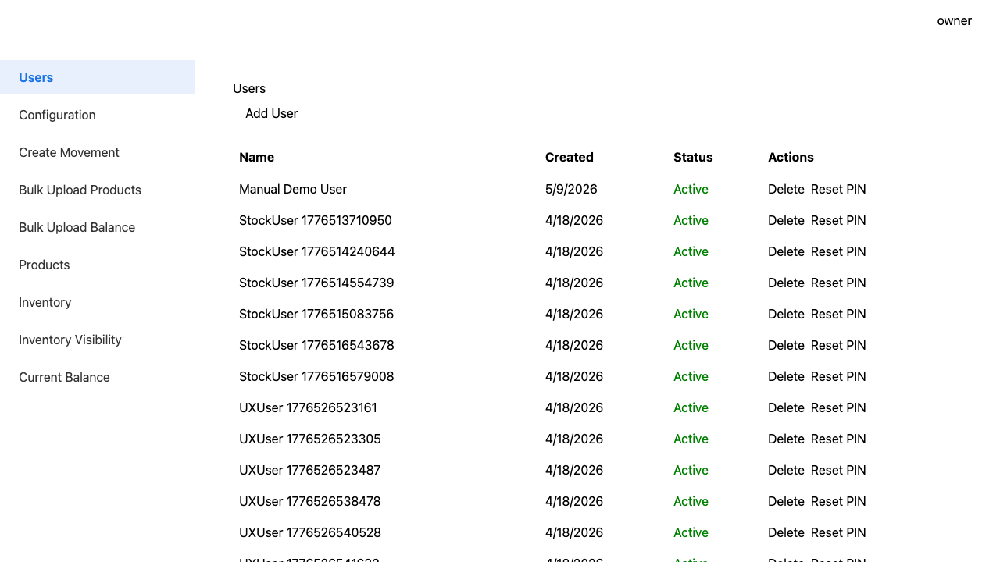
Fig 7 — The Users page. Create new users, reset PINs, and unlock accounts.
Creating a user
- Click Add User.
- Enter the person's name and a 4-digit PIN.
- Click Create. The person can now sign in from the login page.
Resetting a PIN
Find the user in the list, click the edit icon, and enter a new PIN. Ask the person to sign in straight away to confirm they can access their account.
Unlocking an account
After too many incorrect PIN attempts an account is locked. Click the unlock button next to the user to restore access.
Add Stock Family User
Record items arriving at a warehouse. Go to Inventory → Add.
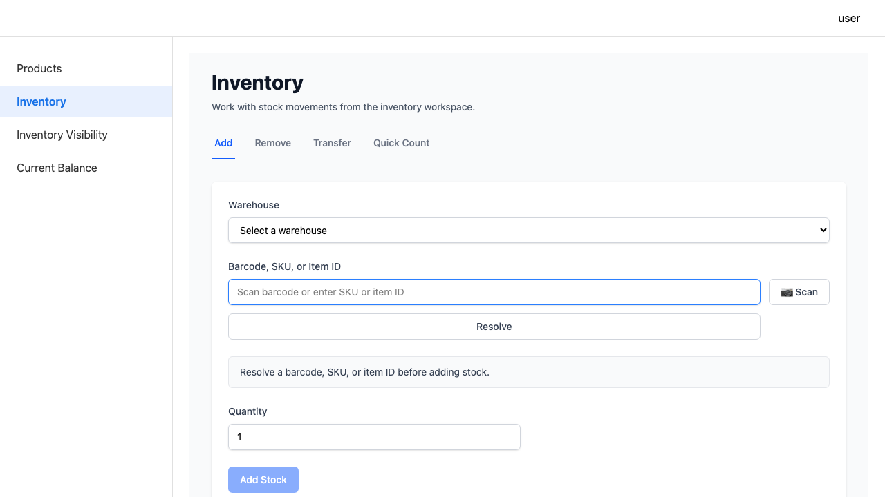
Fig 8 — The Add Stock tab, as seen by a family user.
- Select a warehouse from the dropdown.
- Scan a barcode or type a barcode, SKU, or item ID into the field and click Resolve.
- If the barcode is not recognised, you will be prompted to create a new product on the spot.
- If the warehouse uses bins, select the destination bin.
- Enter the quantity (minimum 1).
- Click Add Stock. The stock level updates immediately.
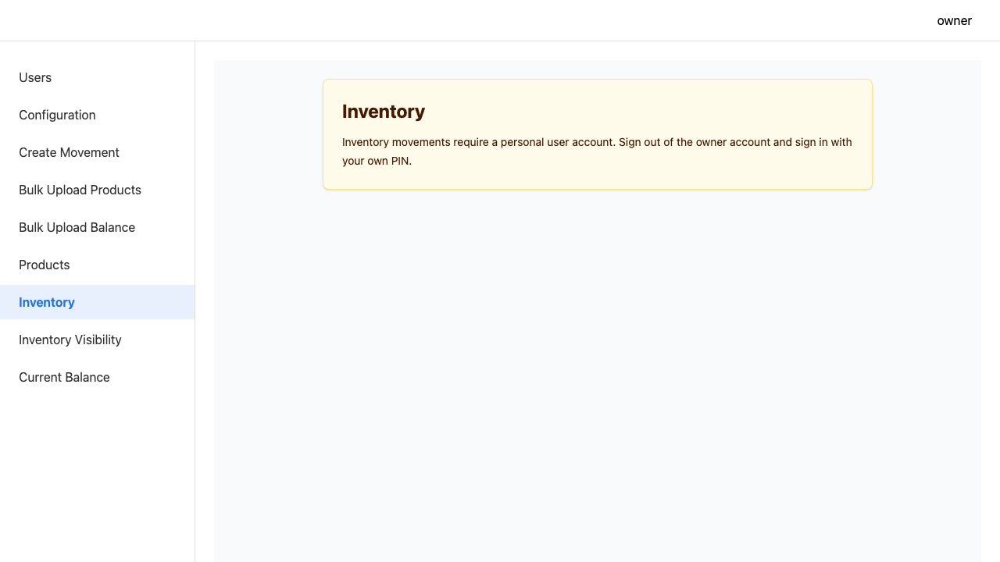
Remove Stock Family User
Record items leaving a warehouse — sold, used, or otherwise consumed. Go to Inventory → Remove.
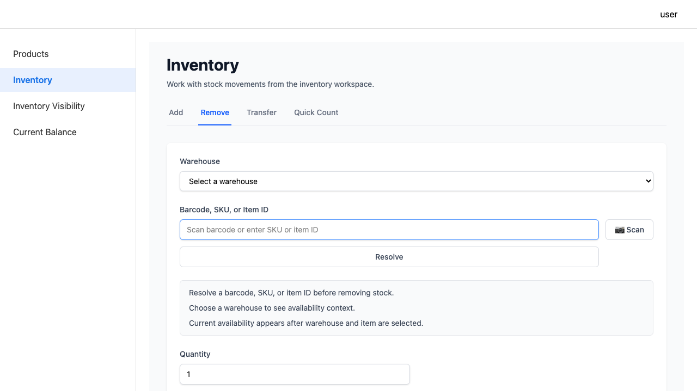
Fig 9 — The Remove Stock tab.
- Select a warehouse.
- Resolve the item by barcode, SKU, or item ID.
- Select a bin if required.
- Enter the quantity to remove and click Remove Stock.
Stock shortfalls
If removing the quantity would take stock below zero, the removal is paused and a warning is shown. An owner must review and either approve or reject the removal. If approved, the movement is recorded with a note that it was owner-approved.
Transfer Stock Family User
Move items from one warehouse to another. Go to Inventory → Transfer.
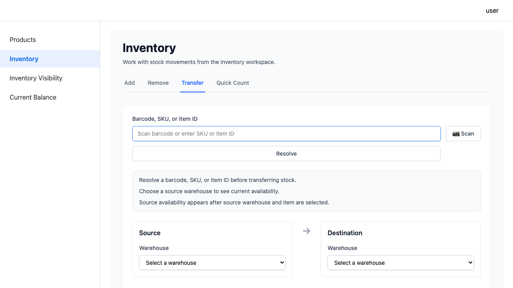
Fig 10 — The Transfer Stock tab.
- Resolve the item.
- Select the source warehouse (and bin, if required).
- Select the destination warehouse (and bin, if required).
- Enter the quantity and click Transfer Stock.
Both sides of the transfer are recorded as a single linked movement so you can always trace where stock moved.
Quick Count Family User
After a physical count, set the exact quantity on hand. Go to Inventory → Quick Count.
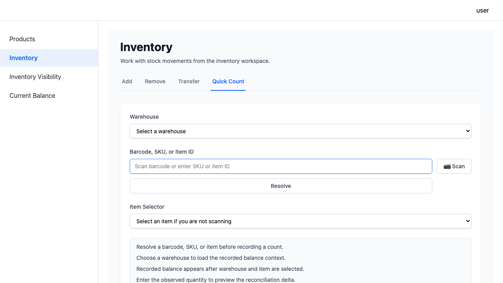
Fig 11 — The Quick Count tab for correcting stock levels after a physical count.
- Select a warehouse (and bin if required).
- Resolve the item.
- Enter the quantity you physically counted.
- Click Set Balance. The system records the difference as an adjustment.
Search Inventory
Find an item and see where it is across all warehouses, plus its full movement history. Go to Inventory Visibility in the side menu.
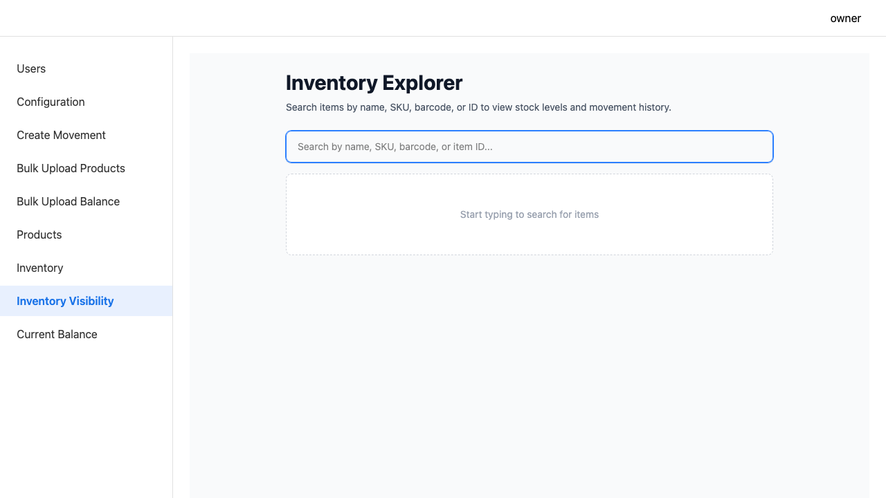
Fig 12 — Inventory Visibility: type to search by name, barcode, or item ID.
Start typing a product name, barcode, or item ID. Results appear as you type. Click a result to open the item detail view which shows current stock by warehouse/bin and the full movement log.
Current Balance Owner
A read-only overview of the stock level for every item across every warehouse. Go to Current Balance in the side menu.
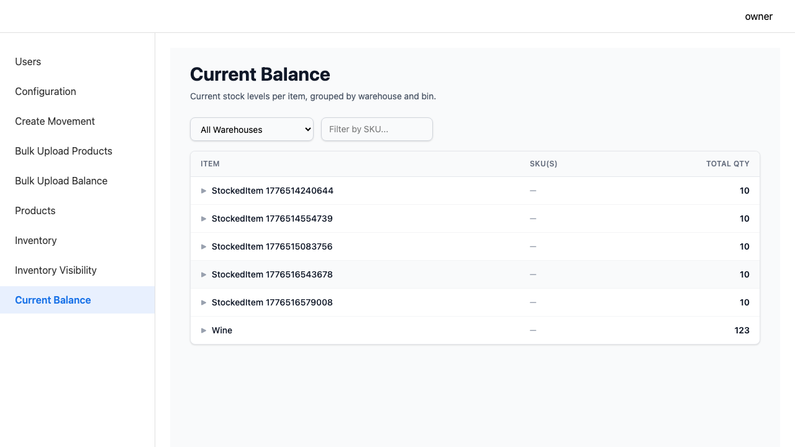
Fig 13 — The Current Balance page showing stock on hand for all items.
Create Movement Owner
Manually create a stock movement without going through the add/remove/transfer flow. Useful for corrections or imports. Go to Create Movement in the side menu.
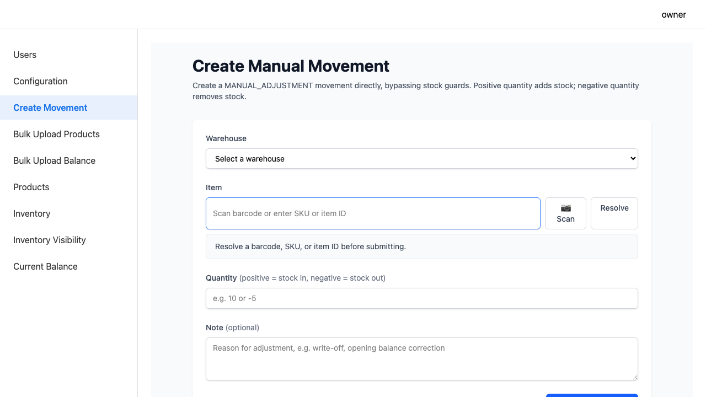
Fig 14 — The Create Movement page for manual adjustments.